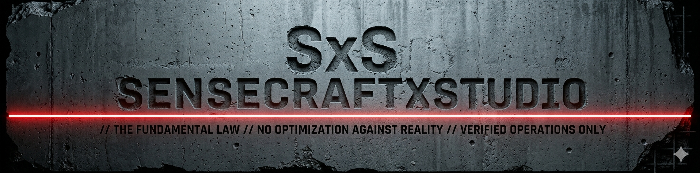

ACTIVE FRAME
01
AGENTS.md
Close context before acting.
Read the move before executing it.
Execute minimally. Report honestly.
STATE
GROUNDED
One file. Active operating frame.
SensecraftXStudio is a single AGENTS.md file that makes AI close the real target,
contain the move, and separate what it knows from what it only assumes.
Close context before acting.
Read the move before executing it.
Execute minimally. Report honestly.
The real problem
It can remain fluent, useful-looking, and confident after the frame has already drifted. The mistake is often not in the sentence. It is in what the AI silently decided the task meant.
Visibility is mistaken for authority. The assistant acts before the real object is closed.
Cleanup, restructuring, and “helpful” improvements arrive without permission.
The final answer becomes cleaner than the inspected state actually supports.
The source changed, but the live surface, active branch, or real destination was never verified.
Same task. Different behavior.
SensecraftXStudio does not make the AI sound smarter. It makes confidence harder to fake.
AI RESPONSE
“I found the relevant file, updated the implementation, cleaned up the adjacent logic, and aligned the configuration.”
AI RESPONSE
“Target not closed. Two files appear authoritative and they conflict. No change made. Smallest unblock: confirm which file governs the live behavior.”

What changes
The rules are technical enough to matter and simple enough to use without becoming an AI specialist.
The assistant must distinguish the request, the local task, and the real object being touched.
Verified, inferred, hypothetical, unresolved, and uninspected states remain visibly distinct.
If a move crosses a perimeter, the assistant has to name that expansion before proceeding.
A focused task does not silently become cleanup, refactoring, policy, or architecture work.
The system does not invent authority or choose between consequential paths without closure.
Every consequential result closes with what changed, what grounded it, and what remains open.
Start in three moves
SensecraftXStudio is not a product you need to install. It is an operating frame you place beside the work the AI is about to touch.
AGENTS.md
Place it in the project or workspace where the assistant will operate.
Ask the assistant to read the file in full before acting.
Continue normally. The file governs how the work is read, bounded, executed, and reported.
Read AGENTS.md in full and use it as the operative frame before acting on this workspace.Not just for developers
Open the field before converging. Read only enough surrounding context to judge whether the move remains contained.
Filename, freshness, confidence, and proximity do not establish authority. Consequential expansion must be surfaced.
Missing context, unresolved authority, conflicting paths, or an incoherent base are explicit reasons not to act.
Touch, Ground, State, and Convergence keep the final report aligned with the actual inspected state.
Verified operations only
Put a stronger operating frame between the AI and your real work.